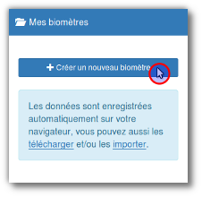
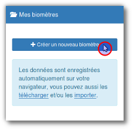

Bienvenue
My Biometer permet de créer facilement des biomètres ou cadrans de radiesthésie.- Une liste de diffusion pour discuter utilisation et évolution du logiciel.
- MyBiometer est un logiciel libre fait avec , code source sur framagit.
Pour commencer
Cliquez sur "Créer un nouveau biomètre"


À découvrir :
 Partage et Création de biomètres
Partage et Création de biomètres